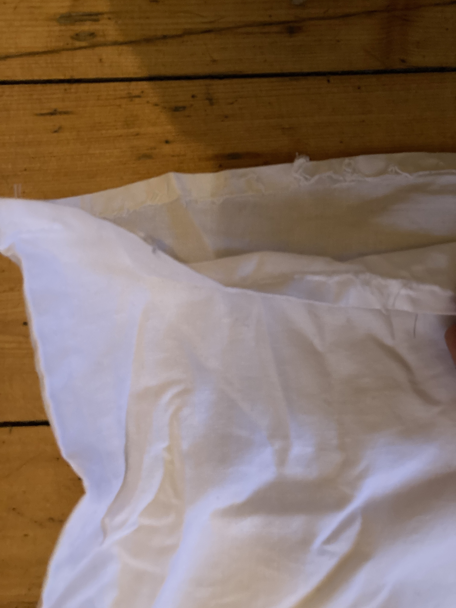
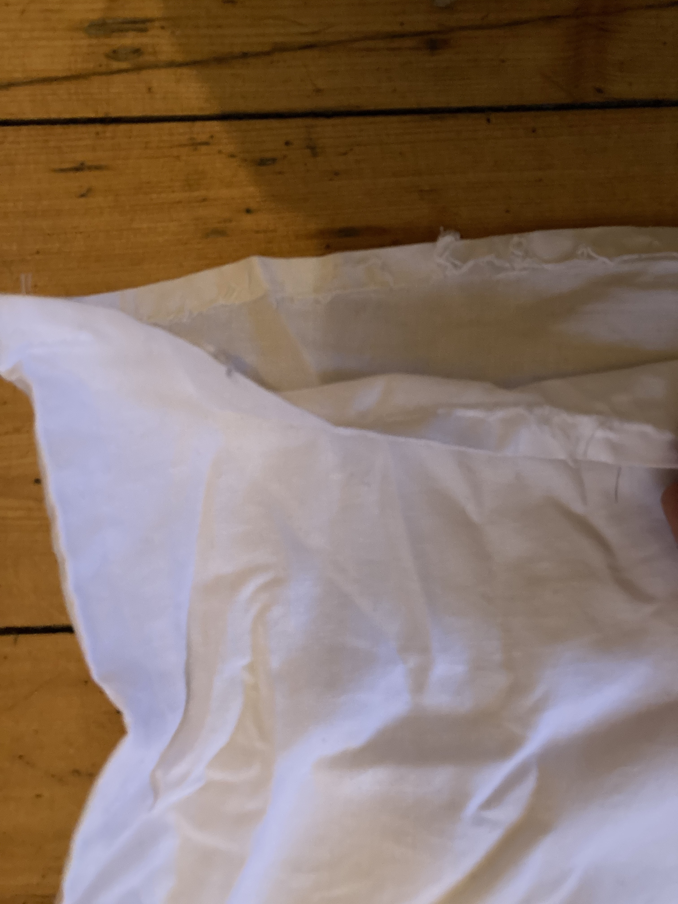

A white tshirt cost about 70 nok
How hard can it be to make?
Planet money stories on how it is done https://apps.npr.org/tshirt/#/title
Turns out it is very expensive
- Fabric 700 NOK
- Labor 6H (120 per hour) 720 NOK
- Total 1070
- Most youtube videos recommend buy a XXL shirt as guide
The process
- Trace your favorite thirt
- Cut
- Sew
No
It was probably the most frustrating afternoon of 2018.
Things that can go wrong apparantly
- You have to tune the threading
- You didn't leave enough material
- You chose the wrong stiching
- You picked the wrong needle
- You picked a non flexible material, this changes everything
- You have no idea how to get the neck right
- You can't sew straight
- You have to start over
- You do new mistakes
- You run out of thread because you're a newb and wasted all the thread
- You break needles
- You have to rethread a million billion times
- You have to refill the underthread
my process
machine
fabric
template
The result
a pair of the most expensive and unconfortable tshirts I've ever owned
no 1
 no 2

no 2
